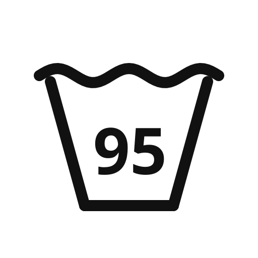
95℃限度・洗濯機
液温95℃を限度に洗濯機で洗えます
熱に強い白物リネンなど。ふつうの洗濯物ではほぼ見かけません。
- 洗濯機の通常コース
JIS L0001 洗濯処理記号190
服のタグについている洗濯表示（洗濯マーク）の意味を、全部まとめました。おけは家庭洗濯、三角は漂白、四角は乾かし方、アイロンの形はアイロン、丸はクリーニング店への指示です。記号を押すと、何をしていいか・してはいけないかまで出ます。
新JIS（2016年〜）41種・旧JIS（2016年より前）22種、あわせて全記号を載せています。
タグの記号は左からこの順に並びます。押すと絞り込めます。

液温95℃を限度に洗濯機で洗えます
熱に強い白物リネンなど。ふつうの洗濯物ではほぼ見かけません。
JIS L0001 洗濯処理記号190
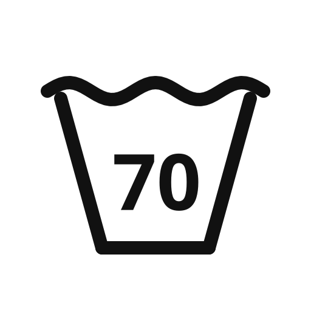
液温70℃を限度に洗濯機で洗えます
業務用の高温洗いを想定した表示です。家庭では60℃以下で十分です。
JIS L0001 洗濯処理記号170
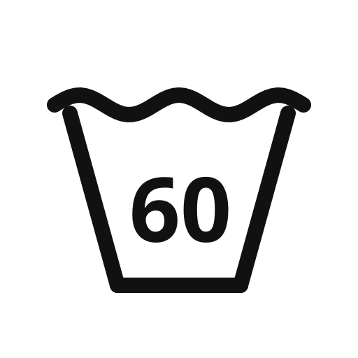
液温60℃を限度に洗濯機で洗えます
お湯を使った洗濯もOK。皮脂汚れの多いタオルや肌着向けです。
JIS L0001 洗濯処理記号160
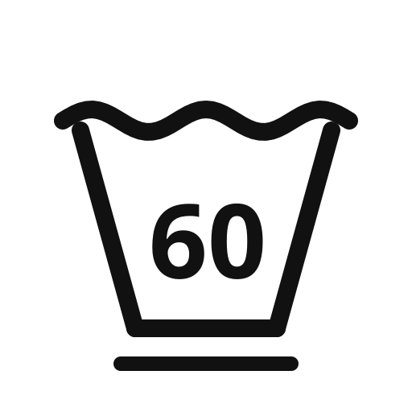
液温60℃を限度に、弱い操作で洗濯機洗いできます
60℃までのお湯は使えますが、弱コース（おしゃれ着コース）で洗ってください。
JIS L0001 洗濯処理記号161
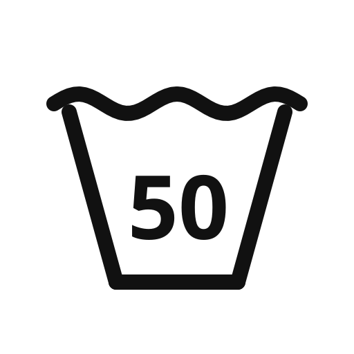
液温50℃を限度に洗濯機で洗えます
50℃までのお湯洗いOK。通常コースで洗えます。
JIS L0001 洗濯処理記号150
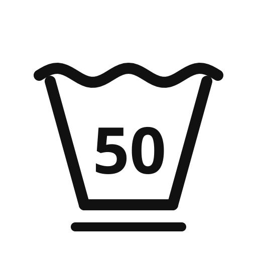
液温50℃を限度に、弱い操作で洗濯機洗いできます
50℃までのお湯が使えますが、弱コースで洗ってください。
JIS L0001 洗濯処理記号151
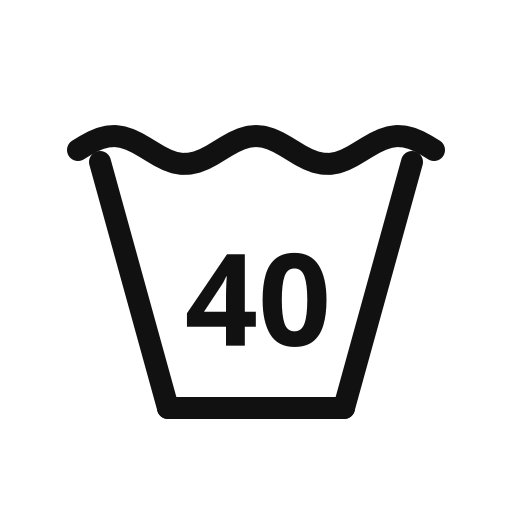
液温40℃を限度に洗濯機で洗えます
いちばんよく見る記号。ふつうに洗濯機で洗えます。
JIS L0001 洗濯処理記号140
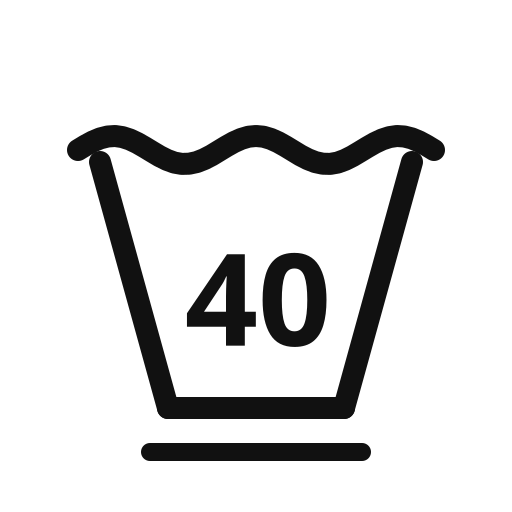
液温40℃を限度に、弱い操作で洗濯機洗いできます
洗濯機OKですが、弱コース（おしゃれ着コース）を選んでください。洗濯ネット推奨。
JIS L0001 洗濯処理記号141
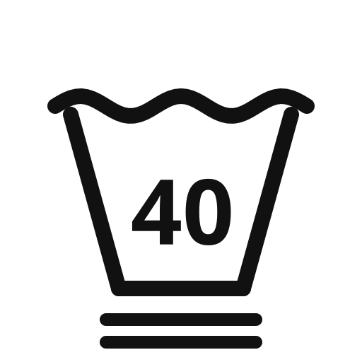
液温40℃を限度に、非常に弱い操作で洗濯機洗いできます
デリケート素材。ドライコースなど最も弱い水流で、洗濯ネットに入れて洗ってください。
JIS L0001 洗濯処理記号142
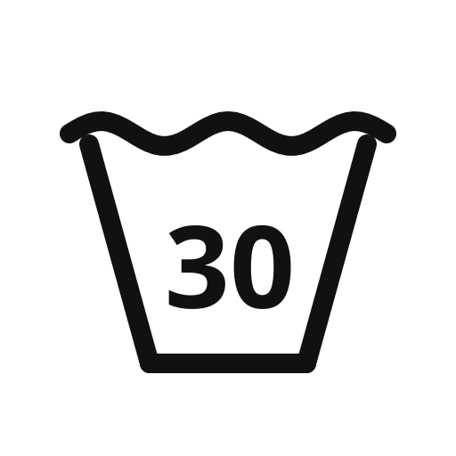
液温30℃を限度に洗濯機で洗えます
水かぬるま湯で。通常コースで洗えますが、お湯は使わないでください。
JIS L0001 洗濯処理記号130
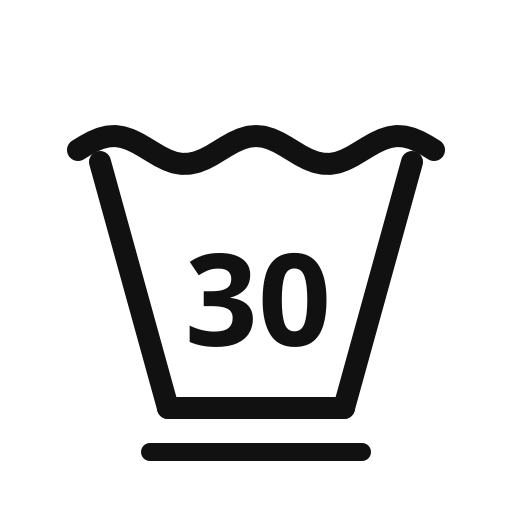
液温30℃を限度に、弱い操作で洗濯機洗いできます
水かぬるま湯で、弱コース（おしゃれ着コース）で洗ってください。
JIS L0001 洗濯処理記号131
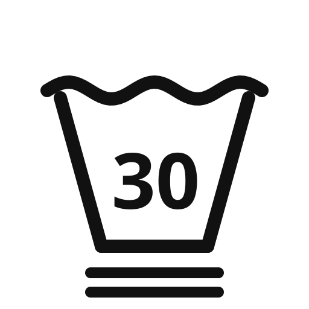
液温30℃を限度に、非常に弱い操作で洗濯機洗いできます
デリケート素材。水で、最も弱い水流・短時間で。洗濯ネット必須です。
JIS L0001 洗濯処理記号132
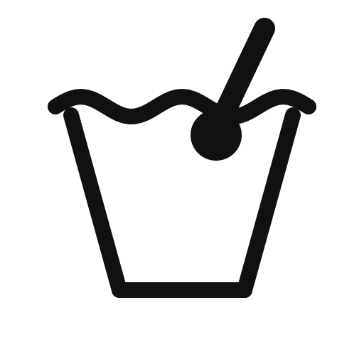
液温40℃を限度に手洗いできます
洗濯機は使わず、押し洗いでやさしく。洗濯機の「手洗いコース」も目安になりますが、心配なら手で。
JIS L0001 洗濯処理記号110
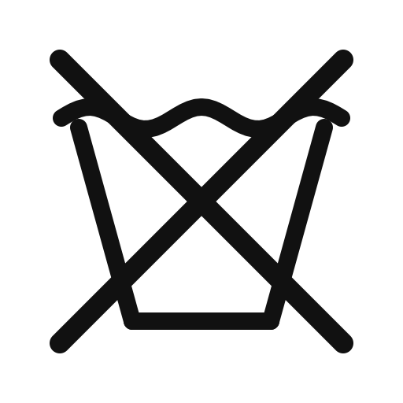
家庭での洗濯はできません
水洗いすると縮み・型くずれの恐れ。クリーニング店に相談してください（クリーニング記号を確認）。
JIS L0001 洗濯処理記号100
液温95℃を限度に洗濯機で洗えます
2016年以前の表示です。新表示の「95」と同じ意味です。
JIS L0217（旧）
液温60℃を限度に洗濯機で洗えます
2016年以前の表示です。新表示の「60」と同じ意味です。
JIS L0217（旧）
液温40℃を限度に洗濯機で洗えます
2016年以前の表示です。新表示の「40」と同じ意味です。
JIS L0217（旧）
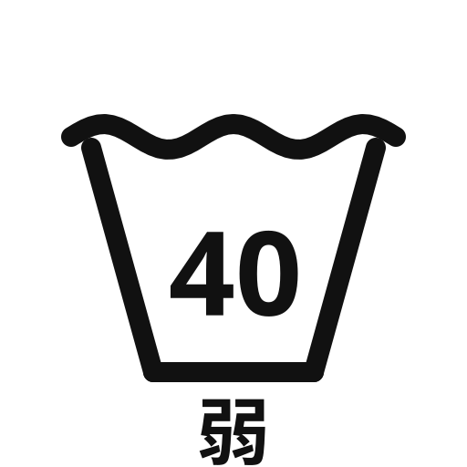
液温40℃を限度に、弱い水流で洗濯機洗いできます
「弱」表記の旧記号。新表示の「40＋下線1本」と同じで、弱コースで洗います。
JIS L0217（旧）
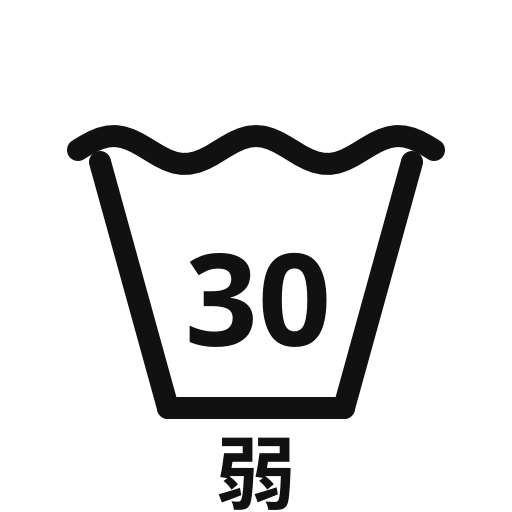
液温30℃を限度に、弱い水流で洗濯機洗いできます
水かぬるま湯で弱コース。新表示の「30＋下線1本」と同じ意味です。
JIS L0217（旧）
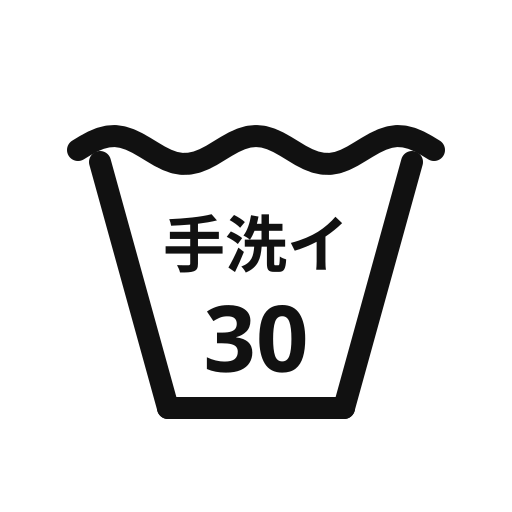
液温30℃を限度に手洗いできます（洗濯機不可）
「手洗イ」表記の旧記号。押し洗いでやさしく洗ってください。
JIS L0217（旧）
家庭では洗濯できません
水洗いNGの旧記号。クリーニング店に相談してください。
JIS L0217（旧）
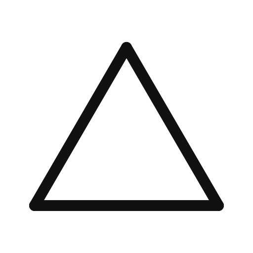
塩素系・酸素系どちらの漂白剤も使えます
白物のシミ・黄ばみに塩素系（ハイター等）も酸素系（ワイドハイター等）も使えます。
JIS L0001 漂白処理記号220
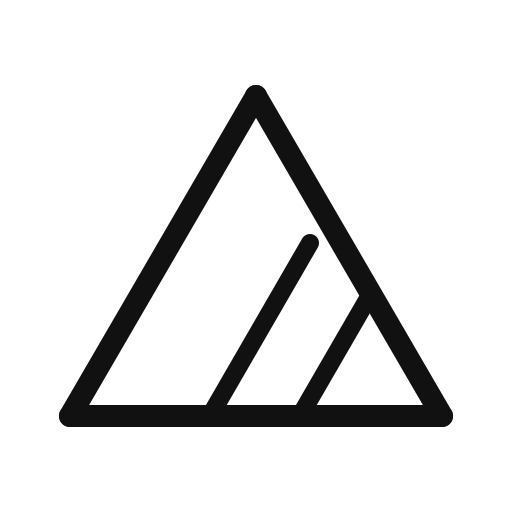
酸素系漂白剤のみ使えます（塩素系は不可）
色柄物に多い表示。ワイドハイター等の酸素系はOK、ハイター等の塩素系は色落ちするのでNG。
JIS L0001 漂白処理記号210
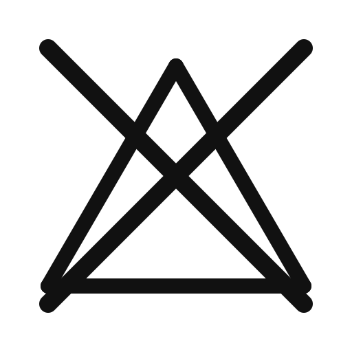
漂白剤は使えません
塩素系も酸素系も使えません。漂白剤入りの洗剤にも注意してください。
JIS L0001 漂白処理記号200
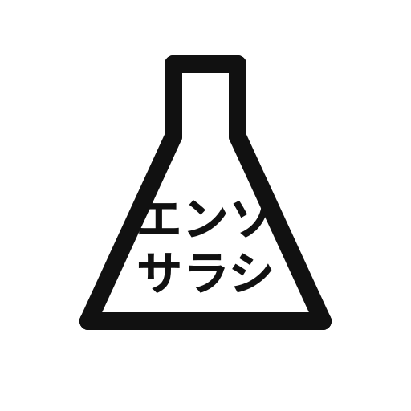
塩素系漂白剤が使えます
「エンソサラシ」表記の旧記号。塩素系（ハイター等）が使えます。
JIS L0217（旧）
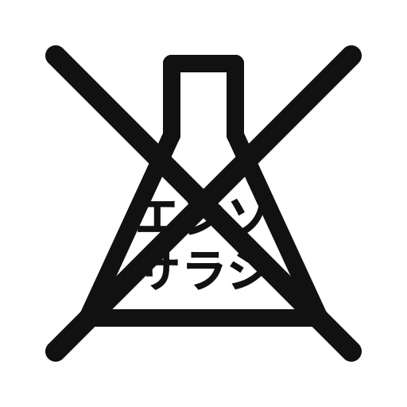
塩素系漂白剤は使えません
塩素系はNG。酸素系の可否は表示されていないため、使う場合は目立たない場所で試してください。
JIS L0217（旧）。酸素系の可否は旧表示に規定なし
タンブル乾燥できます（排気温度80℃上限）
乾燥機OK。ふつうの温度設定で乾かせます。
JIS L0001 乾燥処理記号320
低い温度でタンブル乾燥できます（排気温度60℃上限）
乾燥機は低温設定なら使えます。高温は縮みの原因になります。
JIS L0001 乾燥処理記号310
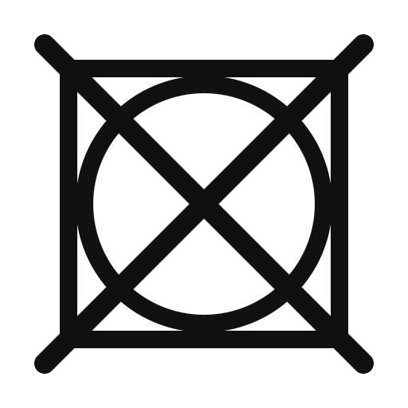
タンブル乾燥はできません
乾燥機に入れないでください。縮み・傷みの原因です。自然乾燥の記号に従って干してください。
JIS L0001 乾燥処理記号300
つり干しがよい（脱水後、ハンガー等に掛けて干す）
ふつうに脱水してからハンガーや物干しに掛けて干します。
JIS L0001 自然乾燥記号440
日陰でのつり干しがよい
直射日光は色あせの原因。風通しのよい日陰に掛けて干してください。
JIS L0001 自然乾燥記号445
脱水せず、ぬれたままつり干しがよい
脱水・絞りをせず、水がしたたる状態のまま掛けて干します。シワ・型くずれ防止です。
JIS L0001 自然乾燥記号460
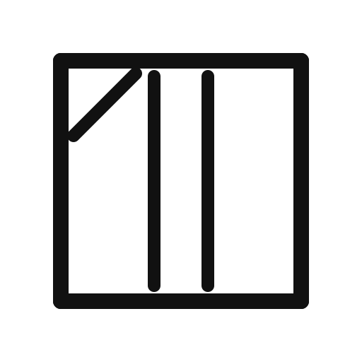
脱水せず、日陰でぬれたままつり干しがよい
脱水せずぬれたまま、日陰に掛けて干してください。
JIS L0001 自然乾燥記号465
平干しがよい（平らに広げて干す）
ハンガーだと伸びる服（ニット等）。平干しネットや台に広げて干してください。
JIS L0001 自然乾燥記号420
日陰での平干しがよい
日陰で平らに広げて干します。ニットの定番の干し方です。
JIS L0001 自然乾燥記号425
脱水せず、ぬれたまま平干しがよい
脱水せず、ぬれたまま平らに広げて干してください。
JIS L0001 自然乾燥記号440相当
脱水せず、日陰でぬれたまま平干しがよい
最もデリケートな干し方指定。脱水せずぬれたまま、日陰で平らに広げて干します。
JIS L0001 自然乾燥記号485
手絞りは弱く、遠心脱水は短時間で
旧表示だけにある絞り方の記号。新表示では廃止され、ぬれ干し記号で表現されます。
JIS L0217（旧）。新JISに対応記号なし
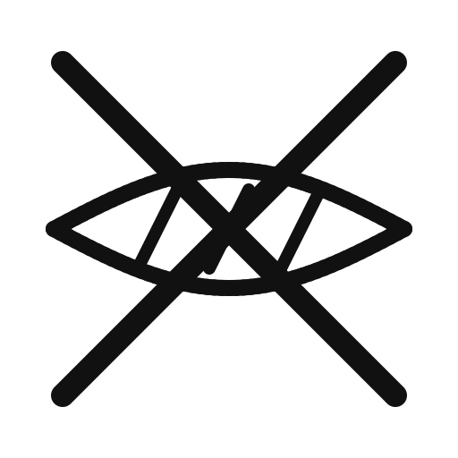
絞ってはいけません
脱水・絞りNG。新表示の「ぬれつり干し」に相当し、ぬれたまま干します。
JIS L0217（旧）
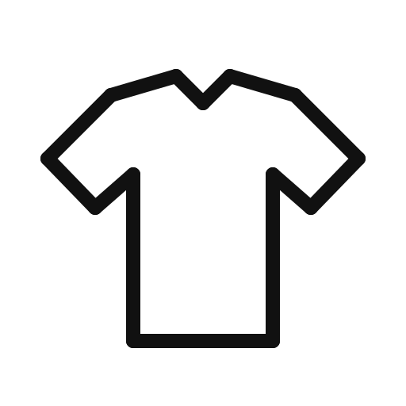
つり干しがよい
ハンガー等に掛けて干す旧記号。新表示の「四角＋縦線」と同じ意味です。
JIS L0217（旧）
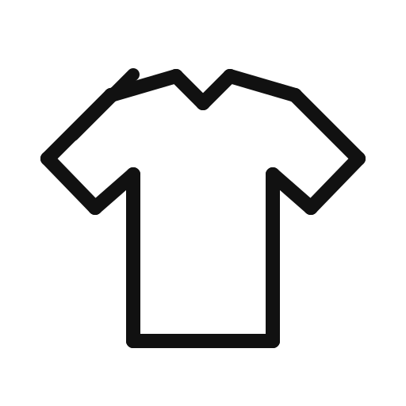
日陰でのつり干しがよい
直射日光を避けて掛けて干す旧記号です。
JIS L0217（旧）
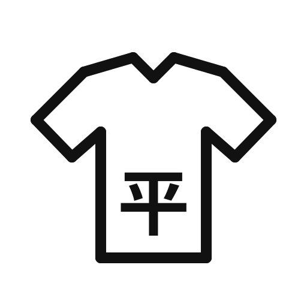
平干しがよい
平らに広げて干す旧記号。ニット等の型くずれ防止です。
JIS L0217（旧）
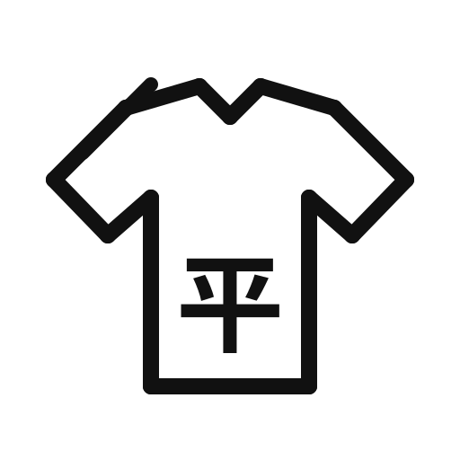
日陰での平干しがよい
日陰で平らに広げて干す旧記号です。
JIS L0217（旧）
底面温度200℃を限度にアイロンできます
綿・麻など。高温設定までOKです。
JIS L0001 アイロン記号530
底面温度150℃を限度にアイロンできます
ポリエステル・ウールなど。中温設定までにしてください。
JIS L0001 アイロン記号520
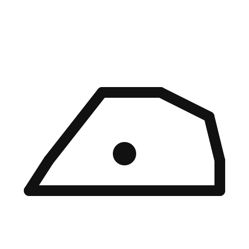
底面温度110℃を限度に、スチームなしでアイロンできます
アクリル・ナイロンなど熱に弱い素材。低温で、スチームは使わないでください。
JIS L0001 アイロン記号510
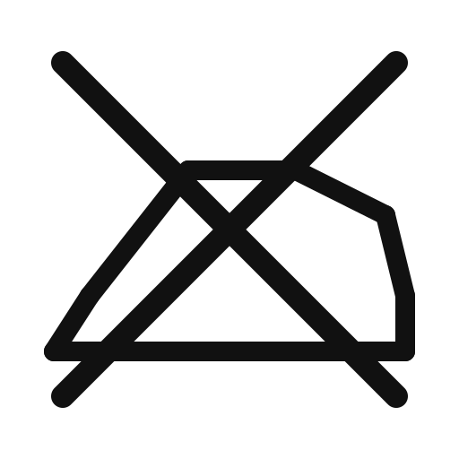
アイロンはかけられません
熱で溶けたりテカリが出る素材です。シワはスチーマーも避け、干し方で防いでください。
JIS L0001 アイロン記号500
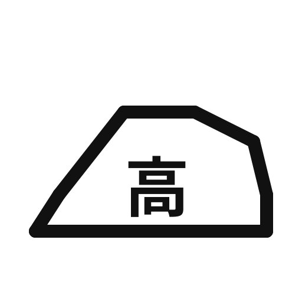
180〜210℃（高温）でアイロンできます
「高」表記の旧記号。新表示の点3つ（200℃まで）に相当します。
JIS L0217（旧）
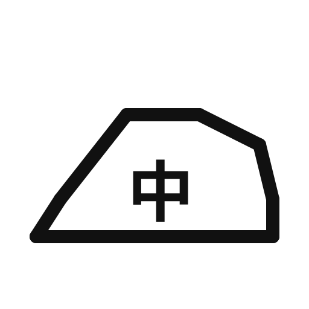
140〜160℃（中温）でアイロンできます
「中」表記の旧記号。新表示の点2つ（150℃まで）に相当します。
JIS L0217（旧）
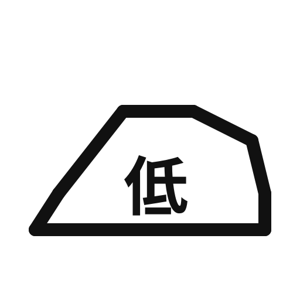
80〜120℃（低温）でアイロンできます
「低」表記の旧記号。新表示の点1つ（110℃まで）に相当します。あて布推奨。
JIS L0217（旧）
アイロンはかけられません
アイロンNGの旧記号です。
JIS L0217（旧）
パークロロエチレン及び石油系溶剤でドライクリーニングできます
クリーニング店に出せます。店への指示記号なので、家庭では特にすることはありません。
JIS L0001 商業クリーニング記号620
パークロロエチレン及び石油系溶剤で、弱いドライクリーニングができます
クリーニング店に出せます（弱い処理指定）。受付でタグを見せれば大丈夫です。
JIS L0001 商業クリーニング記号621
石油系溶剤でドライクリーニングできます
クリーニング店に出せます（石油系溶剤のみ指定）。
JIS L0001 商業クリーニング記号610
石油系溶剤で、弱いドライクリーニングができます
クリーニング店に出せます（石油系・弱い処理指定）。
JIS L0001 商業クリーニング記号611
ドライクリーニングはできません
ドライクリーニングNG。洗濯記号とウェットクリーニング記号で洗い方を確認してください。
JIS L0001 商業クリーニング記号600
ウェットクリーニングができます
クリーニング店での特殊な水洗い。家庭で洗えるという意味ではありません。
JIS L0001 商業クリーニング記号720
弱い操作のウェットクリーニングができます
クリーニング店の特殊水洗い（弱い処理指定）。家庭洗濯の可否は洗濯記号を見てください。
JIS L0001 商業クリーニング記号710
非常に弱い操作のウェットクリーニングができます
クリーニング店の特殊水洗い（非常に弱い処理指定）。
JIS L0001 商業クリーニング記号700
ウェットクリーニングはできません
クリーニング店の水洗いもNG。ドライクリーニング記号と洗濯記号で扱いを確認してください。
JIS L0001 商業クリーニング記号701
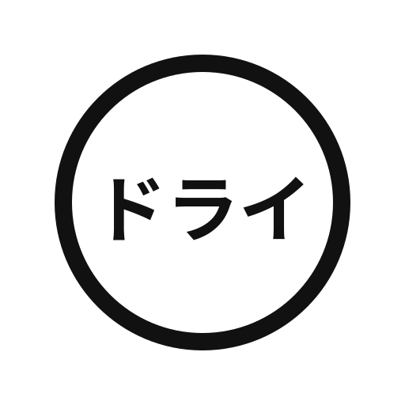
ドライクリーニングができます
「ドライ」表記の旧記号。クリーニング店に出せます。
JIS L0217（旧）
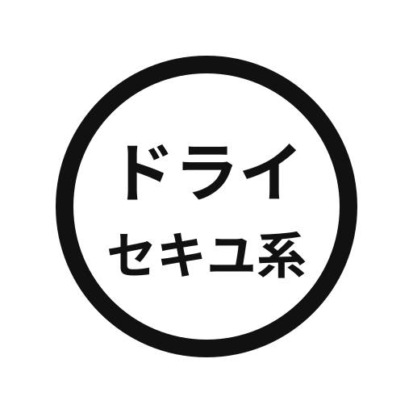
石油系溶剤でドライクリーニングができます
「セキユ系」表記の旧記号。新表示のFに相当します。
JIS L0217（旧）
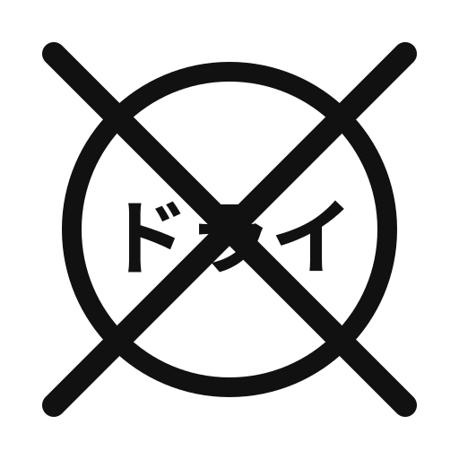
ドライクリーニングはできません
ドライNGの旧記号。洗濯記号で家庭洗いの可否を確認してください。
JIS L0217（旧）
あてはまる記号が見つかりませんでした。別の言葉でお試しください。
タグの記号が小さくて読めないときや、いくつも並んでいて結局どう洗えばいいのか分からないときは、タグを撮るだけで意味と洗い方をまとめて出すアプリがあります。この早見表と同じ解説がそのまま入っています。